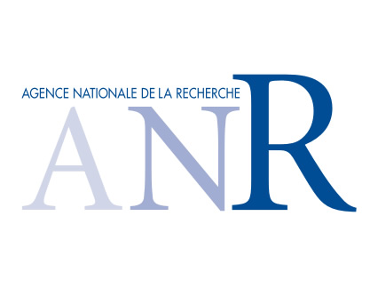

Learning-Based Symmetry Detection
This project has been supported by Agence Nationale de Recherche (ANR) under Grant ANR-10-JCJC-0205. Code, readme, demo: symmetry_1.0.zip. Annotations on BSDS300: SYMMAX300.zip. |
|

Brief description:
We train a detector that densely evaluates the probability of symmetry for a given grayscale/color image. We use integral images and gaussian pyramids to efficiently extract brightness, color and texture features at multiple scales and orientations. An additional spectral feature can be pre-computed and used during training and testing. Multiple instance learning allows us to treat scale and orientation as latent variables during training, and automatically infer positive examples through a noisy-or response. Our ground-truth is constructed on top of the Berkeley Segmentation Dataset (BSDS300) using skeletons of selected image segments.
How to use:
The code for symmetry detection is in the rpb/ directory. You can find separate subdirectories with the code for feature extraction, training, benchmarking etc.
For use on a new example image:
1) Unzip symmetry_1.0 and add it to your working space in Matlab.
2) The main function for symmetry detection in a new image is rpb.m. Its use is demonstrated in the rpb_demo included.
For use and training on images from the BSDS300:
1) Add the images and human segmentations in your working path.
2) Edit bsdsRoot.m according to the path of the images and segmentations directory.
For more information refer to the README.txt included in the package.
S. Tsogkas and I. Kokkinos
Learning-Based Symmetry Detection in Natural Images
Proc. European Conf. on Computer Vision (ECCV), 2012.
[pdf]
|  |